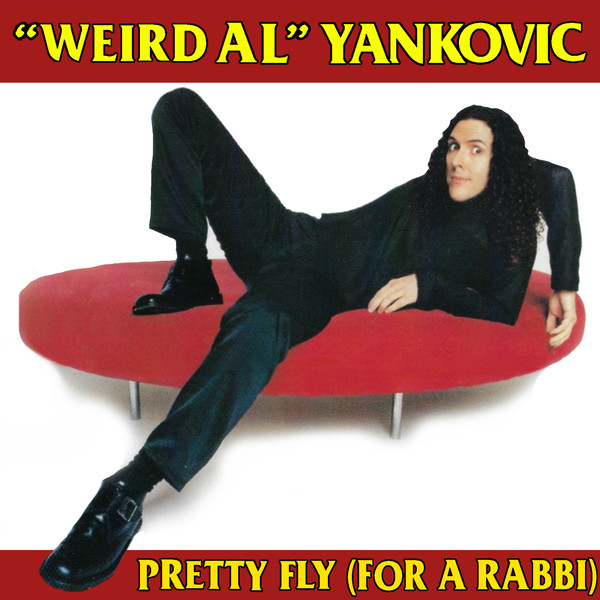

"Pretty Fly for a Rabbi", também conhecido como "Pretty Fly (For a Rabbi)" na Austrália, é uma canção de "Weird Al" Yankovic lançada em 1999 no álbum Running with Scissors. A música é uma paródia de "Pretty Fly (For a White Guy)", da banda The Offspring, e transforma a ideia da música original em uma brincadeira envolvendo um rabino considerado bastante moderno e popular. A canção foi lançada como single exclusivamente na Austrália.
A música apresenta diversas referências à cultura judaica e utiliza várias palavras e expressões em iídiche, uma língua de origem germânica historicamente associada às comunidades judaicas da Europa. Logo no início, Al substitui a frase sem sentido presente na introdução da música original por uma expressão em iídiche que significa "Você deveria virar um blintz", fazendo uma das várias brincadeiras linguísticas presentes na composição.
Apesar da grande quantidade de referências judaicas na música, "Weird Al" não é judeu, mas sim um cristão praticante desde a infância. Outro momento curioso ocorre quando Al substitui a contagem "uno, dos, tres, cuatro, cinco, cinco, seis" da música original pela frase "mekka lekka hi, mekka hiney hiney ho".
A expressão não é iídiche, como pode parecer à primeira vista, mas sim uma referência às palavras mágicas utilizadas por Jambi, o gênio de Pee-wee's Playhouse, personagem interpretado por John Paragon, que também participou do filme UHF, estrelado por "Weird Al".
A gravação dos vocais adicionais também teve uma história curiosa. Al originalmente queria que Fran Drescher, sua colega no filme UHF, participasse cantando a frase "How ya doin', Bernie?", mas ela não estava disponível. Em seguida, Mary Kay Bergman foi convidada para gravar a fala imitando sua personagem Sheila Broflovski, de South Park. Entretanto, essa versão acabou sendo descartada por receio de problemas com a Comedy Central, emissora responsável pelo programa. Finalmente, a dubladora Tress MacNeille foi chamada para gravar a fala fazendo uma imitação de Fran Drescher. Mary Kay Bergman acabou participando da versão final com os vocais agudos de "For a rabbi!".
Apesar de ter sido lançada como single na Austrália, "Pretty Fly for a Rabbi" não recebeu um videoclipe próprio. Em seu lugar, um trecho da música retirado do especial Weird Al Yankovic Live! foi utilizado para divulgação. Com seu humor baseado em trocadilhos, referências culturais e elementos da música original, a faixa se tornou uma das paródias mais características de Running with Scissors.
Veren zol fun dir a blintsa
(How ya doin' Bernie?) Oy vey, oy vey
(How ya doin' Bernie?) Oy vey, oy vey
(How ya doin' Bernie?) Oy vey, oy vey
And all the goyim say I'm pretty fly for a rabbi
Meccha leccha hi, meccha hiney hiney ho
Our temple's had a fair share of rabbis in the past
But most of 'em were nudniks and none of 'em would last
But our new guy's real kosher, I think he'll do the trick
I tell ya, he's to die for - he really knows his shtick
So how's by you? Have you seen this Jew?
Reads the Torah, does his own accounting too
Workin' like a dog at the synagogue
He's there all day, he's there all day
Just say "Vay iz mir!" and he'll kick into gear
He'll bring you lots of cheer
and maybe bagels with some shmeer
Just grab your yarmulke and
Hey! Hey! Do that Hebrew thing!
(How ya doin' Bernie?) Oy vey, oy vey
(How ya doin' Bernie?) Oy vey, oy vey
(How ya doin' Bernie?) Oy vey, oy vey
And all the goyim say I'm pretty fly (for a rabbi)
He shops at discount stores, not just any will sufice
He has to find a bargain 'cause he won't pay retail price
He never acts meshugga and he's hardly a schlemiel
But if you wanna haggle, oy, he'll make you such a deal!
People used to scoff, now they say "Mazel tov!"
He's such a macher 'cause he worked his tuchis off
Yeah, he keeps his cool and teaches shul
What's not to like? What's not to like?
On high holy days, you know he prays and prays
And he never eats pastrami on white bread with mayonnaise
Put on your yarmulke and
Hey! Hey! Do that Hebrew thing!
When he's doing a Bar Mitzvah, now that you shouldn't miss
He'll always shlep on down for a wedding or a bris
They say he's got a lot of chutzpah, he's really quite hip
The parents pay the mohel and he gets to keep the tip
(How ya doin' Bernie?) Oy vey, oy vey
(How ya doin' Bernie?) Oy vey, oy vey
(How ya doin' Bernie?) Oy vey, oy vey
Meccha leccha hi, meccha meccha cholly ho
He's doin' well, I gotta kvell
The yentas love him, even shiksas think he's swell
Show up at his home, he says "Shalom"
And "Have some cake - you want some cake?"
Yah, he calls the shots, we really love him lots
Oy gevalt, I'm so ferklempt that I could plotz
So grab your yarmulke
The one you got for Chanukah
Let's put on our yarmulkes and
Hey! Hey! Do that Hebrew thing!